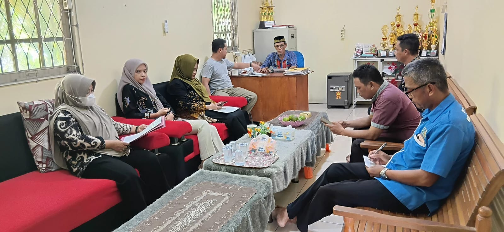

Mengenal lebih dekat sejarah, visi & misi, serta struktur wilayah Desa Pusaka, Kecamatan Tebas, Kabupaten Sambas.
Desa Pusaka merupakan salah satu desa yang terletak di Kecamatan Tebas, Kabupaten Sambas, Provinsi Kalimantan Barat. Desa ini memiliki karakteristik wilayah agraris dengan masyarakat yang menjunjung tinggi nilai adat serta budaya lokal
Desa Pusaka dikenal sangat konsisten dalam mempertahankan adat budaya Melayu setempat. Komitmen kelestarian ini mendapatkan apresiasi resmi dari Pemerintah Kabupaten Sambas melalui Pernyataan Wakil Bupati Sambas.
Desa ini juga mengakomodasi infrastruktur modern bagi pemuda dan masyarakat, seperti kehadiran fasilitas olahraga komersial Monkey King Sport Center yang ikut menggerakkan ekonomi lokal.

Pedoman dan komitmen Pemerintah Desa dalam memajukan masyarakat
"Terwujudnya Desa Yang Asri, Mandiri, Dan Sejahtera Dengan Pembangunan Yang Adil Dan Merata Di Segala Bidang."
Membuat ruang desa dengan rencana pembangunan : jangka pendek, jangka menengah, dan jangka panjang.
Meningkatkan peran pemuda dalam segala aspek pembangunan sumber daya alam manusia, dalam menciptakan sumber-sumber pertumbuhan ekonomi baru.
Meningkatkan koordinasi dan komunikasi serta kerjasama dengan SKPD terkait dalam upaya percepatan pembangunan infrastruktur di desa.
Melakukan pembenahan aparatur desa guna meningkatkan pelayanan kepada masyarakat secara menyeluruh.
Desa Pusaka terbagi atas 3 Dusun, 7 RW, dan 19 RT
Pusat Pemerintahan & Fasilitas Umum
Kawasan Pertanian & Perkebunan
Tambak Ikan
Kecamatan Tebas, Kabupaten Sambas, Kalimantan Barat